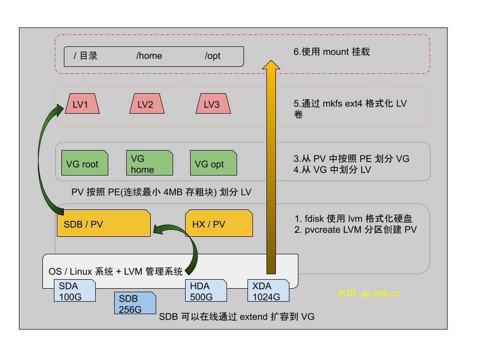

Linux - 可大可小的 LVM

Contents
0x00 理由
接触了个客户环境，物理机磁盘使用的 LVM 方式划分。0202 年了还有公司大量使用该方式规划存储，被迫只能拿起来再复习下这项技术的使用姿势、追踪下最近几年是否有更新。
LVM 是 Logical Volume Manager（逻辑卷管理），内核 3.0 以后的版本默认自身携带。出生在“千禧年”附近，当时受限磁盘比较小，如果需要做大存储或者多用户磁盘划分时，会用到该技术。当时虽然也有 raid 技术，但是 LVM 不花钱啊。
LVM 通过 4 层设计将多个物理设备逻辑映射（貌似按虚拟化理解也行）到系统的单一设备上，然后由系统管理员使用 LVM 扩所容命令操作分区大小。可以做到在线动态调整～
0x01 LVM
以下内容部分来自百度，眼熟的可以发函了；部分内容来自 archlinux wiki

组件
Physical volume (PV)
Unix block device node, usable for storage by LVM. Examples: a hard disk, an MBR or GPT partition, a loopback file, a device mapper device (e.g. dm-crypt). It hosts an LVM header.
Volume group (VG)
Group of PVs that serves as a container for LVs. PEs are allocated from a VG for a LV.
Logical volume (LV)
“Virtual/logical partition” that resides in a VG and is composed of PEs. LVs are Unix block devices analogous to physical partitions, e.g. they can be directly formatted with a file system.
Physical extent (PE)
The smallest contiguous extent (default 4 MiB) in the PV that can be assigned to a LV. Think of PEs as parts of PVs that can be allocated to any LV.
LVM 命令
| LVM | 扫描 | 创建 | 查看 | 删除 | 扩容 | 缩容 |
|---|---|---|---|---|---|---|
| PV | pvscan | pvcreate | pvdisplay / pvs | pvremove | — | — |
| VG | vgscan | vgcreate | vgdisplay / vgs | vgremove | vgextend | vgreduce |
| LV | lvscan | lvcreate | lvdisplay / lvs | lvremove | lvextend | lvreduce |
create lvm
此处省略 800 字 archlinux wiki 内容十分详细
0x02 extend
在机器上实操了下扩容，由于操作不熟练把机器系统搞成了 read only，所以扩容时谨慎操作
有个 1.5T 的磁盘分区已经划分了 LVM，通过 fdisk -l 命令可以看到分区。
|
|
随后使用 pvs 命令查看 PV 信息，看到该磁盘被划分到一个 PV
|
|
查看 VG 信息，VG 是个虚拟的接口，对磁盘不会作出格式化或者修改磁盘元信息的动作。
|
|
查看 LV 信息
|
|
actions-lv
- 执行 lvextend 命令扩容该逻辑卷
lvextend -L +500G /dev/mapper/vg_sto-lv_home
扩容后
df -h查看空间大小未刷新，此时需要使用另一个命令刷新下元数据信息
执行前先看下该逻辑卷格式化方式是 ext4 还是 xfs ，比如通过/etc/fstab查看
-
如果是 xfs 执行这条命令
xfs_growfs /dev/mapper/vg_sto-lv_home
-
如果是 ext4 执行这条命令
resize2fs -f /dev/mapper/vg_sto-lv_home
-
否则可能会看见以下错误
|
|
- 再次查看 lvs 信息
|
|
0x03 高级功能
我没用过，待我做个测试之后研究下 开坑补坑 # 20200321